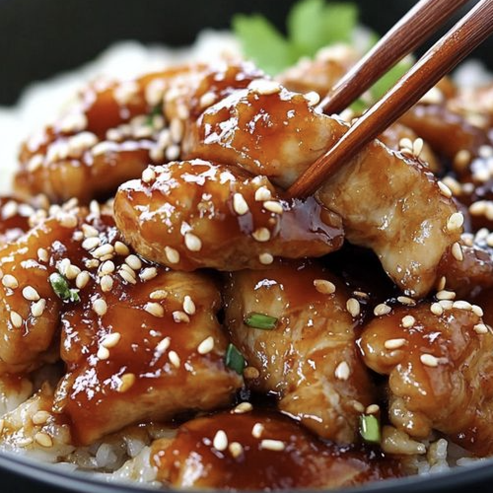

Teriyaki Chicken

Ingredients:
- 1 1/2 pounds (680g) boneless, skinless chicken thighs or breasts
- 1 tablespoon vegetable oil
- 1/2 cup soy sauce
- 1/4 cup mirin (or dry sherry)
- 1/4 cup sake (or water)
- 3 tablespoons brown sugar
- 2 cloves garlic, minced
- 1 tablespoon fresh ginger, grated
- 1 tablespoon cornstarch mixed with 2 tablespoons water (slurry)
- Sesame seeds, for garnish
- Sliced green onions, for garnish
- Steamed rice, for serving
Instructions:
- Mix soy sauce, mirin, sake, brown sugar, garlic, and ginger in a bowl. Add chicken and marinate for at least 30 minutes.
- Remove chicken from marinade (save marinade) and pat dry.
- Heat oil in a skillet over medium-high. Cook chicken until browned and cooked through, 5–7 minutes per side.
- Meanwhile, boil reserved marinade in a saucepan, then simmer 10 minutes. Stir in cornstarch slurry and cook until thickened.
- Slice chicken and serve over rice. Drizzle with sauce and garnish with sesame seeds and green onions.